Die nachfolgenden Beispiele sind allgemeiner oder spezieller Art. Die speziellen Beispiele sind Einzelbeispiele. Andere Bedingungen können weitergehende Maßnahmen erfordern.
Bei der betrieblichen Umsetzung ist das Ergebnis der Gefährdungsbeurteilung zu berücksichtigen.
An einem Konstruktionsteil aus unlegiertem Stahl muss an mehreren Stellen geschweißt werden. Der Schweiß-/Arbeitsbereich beträgt ca. 1 m x 2 m.
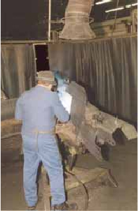
Abbildung 13: Durch den viel zu großen Abstand zwischen Schweißstelle und Erfassungseinrichtung ist die Wirkung eher zufällig, zumal das Erfassungselement als Trichter nicht optimal gestaltet ist.
Die freigesetzten Schweißrauche müssen direkt erfasst und fortgeleitet werden. Auf Grund der wechselnden Schweißstellen im Arbeitsbereich 1 m x 2 m sollte ein zwangsläufig wirkendes Verfahren eingesetzt werden, bei dem die Erfassungseinrichtung nicht ständig nachgeführt werden muss.
In Verbindung mit einer Hochvakuum-/Mittelvakuumtechnik kann eine brennerintegrierte bzw. brenneraufgesetzte Absaugung oder eine Schutzschildabsaugung eingesetzt werden.
Beide Verfahren erfassen die Schadstoffe direkt am Ort der Freisetzung und erfordern einen relativ geringen Luftvolumenstrom (ca. 40 bis 300 m³/h).
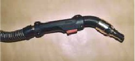
Abbildung 14: Brennerintegrierte Absaugung
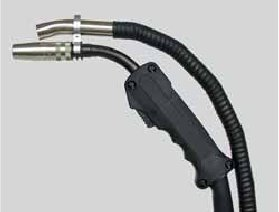
Abbildung 15: Brenneraufgesetzte Absaugung
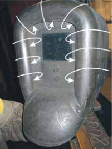
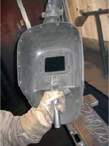
Abbildungen 16 und 17: Schutzschild mit integrierter Absaugung
Nach Erprobung durch mehrere Schweißer wurde entschieden, die Schutzschildabsaugung einzusetzen.
Die Erfassung der Schweißrauche erfolgt nach dem Prinzip der Drallhaube/Wirbelhaube und gewährleistet bei bestimmungsgemäßer Verwendung einen hohen Erfassungsgrad (> 90%).
Der Erfassungsgrad der Schadstoffe ist abhängig von der Position des Schutzschildes zur Schweißstelle. Die Wirksamkeit der Maßnahmen wird vom Schweißer wesentlich beeinflusst. Deshalb wurden diese besonders in der Handhabung der Schutzschildabsaugung unterwiesen.
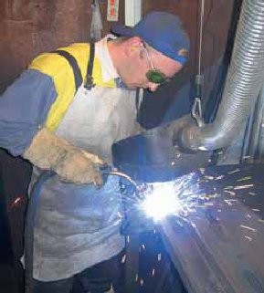
Abbildung 18: Wirkungsvolle Erfassung beim Schweißen mit einem Schutzschild mit integrierter Absaugung
Technische Daten:
| Volumenstrom | 300 m³/h |
| Schlauchdurchmesser | 63 mm |
| Schlauchlänge | 15 m |
In einem Blechlager sollte die vorhandene Brennschneidmaschine modernisiert werden. Bei dieser Modernisierung sollten die Emissionen der beim Brennvorgang entstehenden Schadstoffe (Brennrauche) so weit reduziert werden, dass die Gesundheit der Mitarbeiter nicht gefährdet wird.
Die bestehende Brennschneidemaschine besitzt einen feststehenden Tisch mit den Abmessungen 6 x 2 m. Das Brennportal ist mit fünf Brennern ausgerüstet.
Da beim Brennschneidvorgang die entstehenden Schadstoffe überwiegend nach unten, d. h. in den Brenntisch hinein, gerichtet sind, werden sie unterhalb der Werkstückauflage erfasst und ins Freie fortgeleitet. Aus Gründen des Umweltschutzes wird die abgesaugte, Schadstoff beladene Luft vor dem Fortleiten ins Freie gefiltert (Einhaltung der Grenzwerte nach TA-Luft).
Die Schadstoffanteile, die oberhalb des Werkstückes entstehen und in die Halle gelangen, z. B. beim Einstechen eines neuen Schnittes, Rückprall während des Brennschneidvorganges oder dergleichen, werden über eine nach der Modernisierungsmaßnahme noch zu konzipierende Raumlüftung beseitigt.
Planung und lufttechnische Berechnung muss durch ein Fachunternehmen erfolgen, Umbau bzw. Montage können eigene Mitarbeiter vornehmen. Nachweis der Wirksamkeit zur Einhaltung des Schweißrauch-Grenzwertes in der Luft am Arbeitsplatz erfolgt durch eine Messung.
Aus wirtschaftlichen Gründen ist eine Absaugung unter dem Tisch über die gesamte Tischfläche nicht erwünscht. Zusätzlich ist daher die Brennerbewegung und die eventuelle Werkstückgröße (Tisch ganz oder nur teilweise bedeckt) zu berücksichtigen.
Es wurde ein Brennschneidtisch mit Sektionsabsaugung realisiert, der in zwölf Modulkammern mit 0,5 m Breite aufgeteilt ist. Einseitig an deren Ende ist der Absaugkanal angeordnet. Über pneumatisch, durch das Brennerportal gesteuerte Klappen in den Modulkammern erfolgt die Absaugung jeweils nur an der Stelle, an der gerade gebrannt wird. Die Länge der Modulkammern entspricht der Brenntischbreite.
Dabei ist zu beachten, dass der Luftvolumenstrom des Ventilators in der Lage sein muss, zwei Modulkammern gleichzeitig abzusaugen, um die Brennerbewegung über die Tischfläche zu berücksichtigen (siehe Abbildung 19).
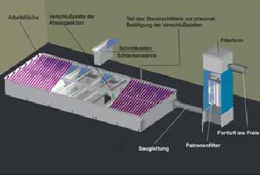
Abbildung 19: Systemanordnung eines Brennschneidtisches
Eingesetzt wird ein Ventilator mit einem Luftvolumenstrom von 4000 m³/h und einem Unterdruck von 4000 Pa. Mit diesem Ventilator können die Modulkammern noch einseitig abgesaugt werden.
Bei großen Tischbreiten (> 2 m) ist eine beidseitige Absaugung der Modulkammern zu empfehlen.
Da ausschließlich Schwarzblech autogen gebrannt wird, ist eine Filterflächenbelastung von 40 m³/h m² als ausreichend zu betrachten. Demnach ergibt sich eine erforderliche Filterfläche von 100 m².
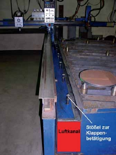
Abbildung 20: Luftkanal mit Klappensteuerung
In einer Schweißwerkstatt werden an ortsfesten Arbeitsplätzen sperrige Stahlkonstruktionen zur Herstellung von Schaltschränken geschweißt. Die Schweißverfahren sind Lichtbogenhandschweißen (LB) und Metall-Aktivgasschweißen (MAG). Zur Schweißraucherfassung werden bewegliche Oberhauben (Absaugtrichter mit Flansch, Düsenplatten) eingesetzt.
Technische Daten:
| Hallenmaße: | L = 18 m; B = 10 m; A = 180 m²; H = 4,25 m; V = 765 m³ |
| Anzahl der Arbeitsplätze: | Zwei Arbeitsplätze Lichtbogenhandschweißen (LB) |
Drei Arbeitsplätze Metall-Aktivgasschweißen (MAG)
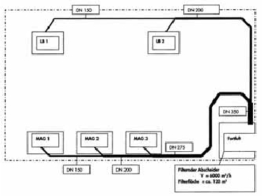
Abbildung 21: Werkstatt mit fünf Schweißarbeitsplätzen
Damit während der Schweißarbeiten die Staubgrenzwerte eingehalten werden, ist in der Werkstatt eine zentrale Absauganlage errichtet worden. Die Reinluft wird als Fortluft nach außen abgeführt.
Der Absaugvolumenstrom beträgt pro Absaugelement 1200 m³/h. Die mittlere Strömungsgeschwindigkeit in den Rohrleitungen liegt gemäß BG-Regel "Arbeitsplatzlüftung – Lufttechnische Maßnahmen" (BGR 121) zwischen 15 m/s und 20 m/s. Die Rohrleitungen sind innen glatt und aus geschweißtem Stahl. Jeder Absauganschluss ist mit einem Absperrschieber ausgerüstet, der nur während Schweißarbeiten automatisch geöffnet ist.
Ermittlung der Rohrdurchmesser für die Absauganlage
| Arbeitsplatz | Luftvolumenstrom m³/h |
Rohrdurch- messer mm |
Luftgeschwin- digkeit im Rohr m/s |
||
| LB 1 LB 2 |
1200 1200 |
160 160 |
16,6 16,6 |
||
| |
LB 1 + LB 2 | 2400 | 224 | 16,9 | |
| MAG 1 | 1200 | 160 | 16,6 | ||
| MAG 2 | 1200 | 160 | 16,6 | ||
| MAG 1 + 2 | 2400 | 224 | 16,9 | ||
| MAG 3 | 1200 | 160 | 16,6 | ||
| MAG 1+2+3 |
3600 | 280 | 16,2 | ||
| Summe LB + MAG | 6000 | 355 | 16,8 | ||
* empfohlene Luftgeschwindigkeit gemäß BGR 121 15 m/s bis 20 m/s
Bei der Auslegung von Absauganlagen muss ein Ventilator gewählt werden, dessen Leistungsmerkmale für den Einsatzzweck geeignet sind. Dabei ist zu berücksichtigen, dass der erforderliche Absaugvolumenstrom an jedem Erfassungselement auch dann sichergestellt ist, wenn die Filterelemente mit Luftverunreinigungen belastet sind (Betriebspunkt 2). Die Abbildung 22 zeigt die Ventilatorkennlinie mit Betriebspunkt 1 (Filter unbelastet) und Betriebspunkt 2 (Filter belastet).
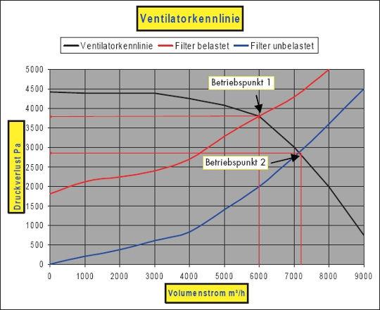
Abbildung 22: Ventilatorkennlinie
Der anfängliche Betriebspunkt 1 (Filter unbelastet) liegt bei 2875 Pa und 7150 m³/h. Nach einer bestimmten Betriebsdauer stellt sich der Betriebspunkt 2 (Filter belastet) ein, der Absaugvolumenstrom sinkt auf 6000 m³/h, der Druckverlust steigt auf 3800 Pa (siehe Abbildung 22 Ventilatorkennlinie). Um den Betriebspunkt 1 wiederherzustellen, müssen die Filter mit abgereinigt werden.
Die Absauganlage ist so ausgelegt, dass alle fünf Schweißarbeitsplätze gleichzeitig abgesaugt werden können. Sind weniger Arbeitsplätze belegt, wird der Absaugvolumenstrom automatisch durch eine Drehzahlregulierung reduziert.
| Technische Daten der Absauganlage: | |
| Absaugung: | 6000 m³/h |
| Filter: | Patronenfilter |
| Filterfläche: | 120 m² |
| Filterreinigung: | Druckluft |
| Staubsammelbehälter: | Stahl 25 l |
Eine Zuluftanlage ist nicht errichtet worden. Das Luftdefizit durch die Absauganlage wird durch natürliche Lüftung ausgeglichen. Um eine gezielte und dauerhaft ausreichende Raumdurchspülung zu erreichen, wird die Errichtung einer Zuluftanlage empfohlen.
Eine Zuluftanlage ist nicht errichtet worden. Das Luftdefizit durch die Absauganlage wird durch natürliche Lüftung ausgeglichen. Um eine gezielte und dauerhaft ausreichende Raumdurchspülung zu erreichen, wird die Errichtung einer Zuluftanlage empfohlen.
In einer Fertigungshalle werden 22 Drehautomaten betrieben. Dabei werden nicht wassermischbare Kühlschmierstoffe (KSS) eingesetzt. Messungen hatten ergeben, dass die KSS-Konzentration mit ca. 25 mg/m³ über dem bis Ende 2004 geltenden Luftgrenzwert für KSS von 10 mg/m³ lagen. Die Fertigungshalle wurde durch Fenster und Türen natürlich belüftet.
Technische Daten:
| Hallenmaße: | L = 24,5 m; B = 10 m; H = 3,5 m; A = 245 m²; V = 858 m³ |
| Anzahl der Maschinen: | 14 Revolverdrehautomaten |
| 5 Langdrehautomaten | |
| 3 Ringdrehautomaten |
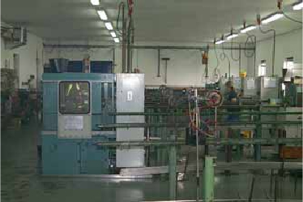
Abbildung 23: Automatendreherei ohne lufttechnische Einrichtungen
Durch die freie (natürliche) Lüftung in der Halle entsteht eine unkontrollierte Luftströmung, mit der die KSS-Emissionen nicht gezielt beseitigt werden. Der KSS verteilt sich in der Halle. Die Folge daraus ist, dass der bis Ende 2004 geltende Luftgrenzwert für KSS überschritten wird. Dies führt dazu, dass die Maschinen und der Fußboden verunreinigt werden und unter anderem die Rutschgefahr erhöht werden kann. Hinzu kommt, dass mit der natürlichen Lüftung keine gleich bleibende Luftversorgung gesichert ist. Das bedeutet im Sommer, wenn die Fenster geöffnet werden, sind die KSS-Konzentrationen geringer als im Winter bei geschlossenen Fenstern.
Zur Reduzierung der KSS-Konzentration wurden folgende lufttechnische Maßnahmen durchgeführt:
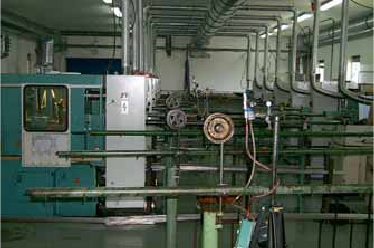
Abbildung 24: Automatendreherei mit lufttechnischen Einrichtungen
Technische Daten der Absaug- und Zuluftanlage:
| Absaugung: | ||
| V = 7700 m³/h; Abluft pro Drehautomat: | V = 350 m³/h | |
| Zuluft: | ||
| V = 7000 m³/h; Zuluft pro m² Fläche: | V = 28,6 m³/h m² | |
Anzahl der Zuluftdurchlässe: 4
Eine Kontrollmessung nach der Installation der zuvor beschriebenen Maßnahmen ergab KSS-Konzentrationen unter 2 mg/m³.
Die lufttechnischen Einrichtungen entsprechen den Anforderungen der BG/BGIA-Empfehlungen "KSS am Arbeitsplatz".
Die Messergebnisse zeigen, dass der ehemalige Grenzwert unterschritten wird. Durch die Umsetzung der BGIA-Empfehlungen sind die Vorausetzungen für den Ausstieg aus dem Kontrollmessplan gemäß der TRGS 402 (11.1997) erfüllt.
Siehe BGIA-Report 4/2004.
Um diese Betriebssituation dauerhaft sicherzustellen, ist eine gewissenhafte Instandhaltung der lufttechnischen Einrichtungen eine grundlegende Voraussetzung.
Beim Spritzlackieren entstehen feine Tröpfchen, so genannte Lackaerosole, die in den Atembereich des Lackierers gelangen können. Das Einatmen führt zu einer erheblichen Gesundheitsgefährdung, da die verwendeten Lacke in der Regel Gefahrstoffe enthalten. Auch beim Pulverlackieren werden Atemwege und Lunge durch die entstehenden Pulverwolken belastet. Weiterhin ist die Haut gefährdet, wenn sich Tröpfchen oder Pulver dort niederschlagen. Es kann dann z. B. zu allergischen Hautreaktionen kommen.
Je nach Zusammensetzung des Lackes ist darüber hinaus mit Brand- und Explosionsgefährdungen zu rechnen. Bei Flüssiglacken entsteht ein explosionsfähiges Gemisch durch Verdunstung des im Lack enthaltenen Lösemittels, bei Pulverlacken durch entsprechende Konzentration des brennbaren Pulvers in Luft.
Auf Grund der genannten Gefährdungen sind Spritzlackierarbeiten grundsätzlich nur in gesonderten Räumen oder Bereichen und bei Einsatz von technischen Lüftungsmaßnahmen erlaubt.
Aufgabe der technischen Lüftung ist es, den Anteil des Lackaerosols oder Beschichtungspulvers, der sich nicht auf dem Werkstück niederschlägt, möglichst vollständig zu erfassen und aus dem Arbeitsbereich abzuführen.
Dabei müssen die getroffenen lufttechnischen Maßnahmen den folgenden Kriterien genügen:
In Hinblick auf den Explosionsschutz hat der Betreiber zwei Möglichkeiten, die Gefährdungen zu bewerten und die entsprechenden Maßnahmen abzuleiten:
In Hinblick auf die Gesundheitsgefährdung des Lackierers nimmt das Lackaerosol eine Sonderstellung ein. Grenzwerte sind lediglich für einzelne Komponenten des Lackes festgelegt, z. B. für Lösemittel. Für Lacke existieren wegen der Vielfalt an Rezepturen keine Grenzwerte.
Der abgesaugte Lacknebel flüssiger Beschichtungsstoffe wird über Nassabscheider oder Filter abgeschieden und muss entsorgt werden. Beim Pulverbeschichten kann der so genannte Overspray wieder verwendet werden, da während der Applikation in der Regel noch keine Vernetzung erfolgt.
In der Praxis haben sich im Wesentlichen auf Grund der großen Bandbreite unterschiedlicher Beschichtungsaufgaben drei Bauformen als besonders praktikabel erwiesen:
Bei dem nachfolgenden Praxisbeispiel Stuhllackierung zeigen Gefahrstoffmessungen, dass mit dem Spritzstand die höchste Wirksamkeit der drei genannten Erfassungsarten erzielt wird.
Optimale Arbeitsbedingungen werden wie folgt erreicht:
Sind diese Bedingungen vollständig eingehalten, werden in der Regel sowohl die Kriterien des Gesundheitsschutzes als auch des Explosionsschutzes erfüllt.
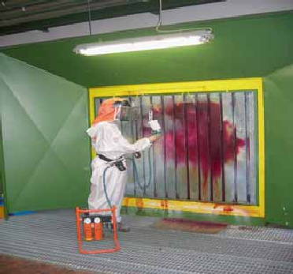
Abbildung 25: Spritzstand
Unfallverhütungsvorschrift "Verarbeiten von Beschichtungsstoffen" (BGV D25),
"Explosionsschutz-Regeln (EX-RL)" (BGR 104),
BG-Regel "Schutzmaßnahmenkonzept für Spritzlackierarbeiten – Lackaerosole" (BGR 231),
BG-Information "Lackierräume und -einrichtungen für flüssige Beschichtungsstoffe – Bauliche Einrichtungen, Brand- und Explosionsschutz, Betrieb" (BGI 740),
BG-Information "Lackierer" (BGI 557),
BG-Information "Elektrostatisches Beschichten" (BGI 764),
| DIN EN 12 215 | "Beschichtungsanlagen; Spritzkabinen für flüssige organische Beschichtungsstoffe – Sicherheitsanforderungen", |
| DIN EN 12 981 | "Beschichtungsanlagen; Spritzkabinen für organische Pulverlacke; Sicherheitsanforderungen", |
| VDMA 24 381 | "Anforderungen an Spritzkabinen und kombinierte Spritz- und Trocknungskabinen". |
Seit Bekanntwerden gesundheitsschädlicher Wirkungen von Holzstaub und der daraus folgenden Festlegung eines TRK-Wertes im Jahre 1987 (2 mg/m³ einatembarer Staubanteil = E-Staub) haben sich die Anforderungen an die Erfassung von Holzstaub grundlegend gewandelt. Vor dieser Zeit erfolgte die Maschinenabsaugung durchweg im unteren bodennahen Bereich zur Entsorgung anfallender Späne. Dagegen ist heute zur Einhaltung des Luftgrenzwertes die möglichst vollständige Erfassung des luftgetragenen einatembaren Staubanteils gefordert.
Im Rahmen eines Projektes zur Umsetzung der TRGS 553 "Holzstaub" wurden von der Holz-BG Messungen an 72 Tisch- und Formatkreissägen ohne bzw. mit unzureichender Absaugung durchgeführt. Dabei lagen über die Hälfte der Messwerte über dem ehemaligen Grenzwert von 2 mg/m³ (Mittlere E-Staubkonzentration von 2,30 mg/m³) und ca. 5% der Messwerte lagen über 5 mg/m³.
Bei der maschinellen Bearbeitung von Holzwerkstoffen werden die Partikel mit hoher Eigengeschwindigkeit freigesetzt. Daraus ergibt sich als Grundforderung die Absaugung direkt an der Entstehungsstelle mit vorzugsweise geschlossenen Erfassungseinrichtungen (Werkzeug soweit wie möglich umschließen) sowie die Anordnung der Absaugrichtung in Richtung des Partikelfluges bzw. bei rotierendem Werkzeug die Umleitung der Zirkulationsströmung in die Absaugrichtung durch Einbau von Leitblechen oder Ähnlichem.
Die Volumenstromberechnung erfolgt nach dem Geschwindigkeitsverfahren, wobei die Erfassungsgeschwindigkeit mindestens der Partikelgeschwindigkeit in den Offenflächen der Erfassungseinrichtung entsprechen muss. Bei der Tischkreissäge kann aus der Umfangsgeschwindigkeit des Sägeblattes und Fläche des Sägespaltes der erforderliche Mindestvolumenstrom für die untere Tischabsaugung errechnet werden. Weil anhaftende Partikel mit dem Sägeblatt nach oben gerissen und dort freigesetzt werden können, ist eine abgesaugte und möglichst selbsttätig absenkende Oberhaube zusätzlich erforderlich.
Zur Expositionsminderung wurden Tisch- und Formatkreissägen mit einer unteren das Sägeblatt weitmöglichst umschließenden Kapselung mit einem hinteren Absaugstutzen versehen. Um das Mitreißen der Partikel nach oben durch den Sägespalt zu mindern, ist ein Abweisblech integriert (siehe Abbildung 26). Je nach Größe des Sägeblattes sind Rohrdurchmesser von mindestens DN 120 bei Tischkreissägen und mindestens DN 140 bei Formatkreissägen erforderlich, entsprechend einer Absaugluftmenge von mindestens 800 bzw. 1100 m³/h bei 20 m/s Luftgeschwindigkeit im Anschlussstutzen. Zusätzlich wurde eine abgesaugte Oberhaube nachgerüstet, die je nach Größe mit einem Rohrdurchmesser zwischen DN 63 und DN 80 (entsprechend ca. 200 bis 400 m³/h) versehen ist.
Im Rahmen des Projekts zur Umsetzung der TRGS 553 (03.1999) wurden von der Holz-Berufsgenossenschaft Messungen an 35 optimierten Tischkreissägen durchgeführt. Dabei wurde eine mittlere E-Staubkonzentration von 0,74 mg/m³ ermittelt. Nur 5 % der Messwerte lagen über 1,71 mg/m³. Die mittlere Staubminderung bezogen auf den Ausgangswert betrug ca. 66 %. Der ehemalige Grenzwert 2 mg/m³ ist in dieser Ausführung somit problemlos einzuhalten.
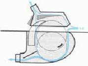
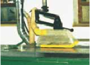
Abbildung 26: Optimierte Stauberfassung an einer Tischkreissäge
Für stationäre Holzbearbeitungsmaschinen wie Tisch- und Formatkreissägen, Bandsägen, Fräs-, Hobel- und Bandschleifmaschinen wurde bereits 1989 das Prüfzeichen "GS-staubgeprüft" eingeführt. Dabei obliegt die Auslegung von Erfassungseinrichtung und Volumenstrom dem Maschinenhersteller, der einen Absauganschluss mit definiertem Durchmesser liefert. Der Hersteller garantiert damit nach Typprüfung der Maschine oder einer Nachrüst-Erfassungseinrichtung durch zertifizierte Prüfstellen, z. B. der Holz-Berufsgenossenschaft, die Einhaltung des Standes der Technik mit 2 mg/m³, wenn die bauseitige Absauganlage eine Mindestgeschwindigkeit von 20 m/s in diesem Absauganschluss erzeugt.
Hinweise zur Auslegung von Erfassungseinrichtungen und Vorschläge für die Nachrüstung der einzelnen Maschinentypen können den folgenden Schriften entnommen werden:
BG-Information "Holzstaub – Arbeitssicherheit und Gesundheitsschutz beim Erfassen, Absaugen und Lagern" (BGI 739),
"Holzstaub" – Projektbericht zur Umsetzung der TRGS 553 "Holzstaub".
Durch Koch-, Brat-, Grill- und Frittierprozesse in Küchen werden Wärme, Feuchtigkeit und Stoffe freigesetzt. Wärme und Feuchtigkeit können zu einer klimatischen Belastung des Küchenpersonales führen. Was die stoffliche Belastung betrifft, haben umfangreiche Untersuchungen gezeigt, dass unter den mehr als 200 nachgewiesenen chemischen Verbindungen auch solche mit gesundheitsschädigendem Potenzial sind. Werden Küchen unzureichend be- und entlüftet, so können an den Arbeitsplätzen sowohl erhöhte klimatische als auch stoffliche Belastungen auftreten. Erkrankungen der Beschäftigten sind dann möglich.
Aufgabe einer Küchenbe- und -entlüftungsanlage ist es, die entstehenden Wärme-, Feuchte- und Stofflasten möglichst vollständig zu erfassen und abzuführen sowie die abgeführte Luftmenge durch frische Zuluft zu ersetzen (Umluftbetrieb ist in Küchen nicht erlaubt). Damit sind grundsätzlich sowohl eine Be- als auch eine Entlüftungsanlage erforderlich.
Über den heißen Küchengeräten, z. B. Herde, Grillplatten, Kochkessel, entstehen zur Decke gerichtete Thermikströmungen. Mit dieser Thermikströmung werden die bei den Koch-, Brat-, Grill- und Frittierprozessen entstehenden Wärme-, Feuchte- und Stofflasten ebenfalls zur Decke transportiert. Es reicht also aus, über im Deckenbereich positionierte Erfassungseinrichtungen diese Lasten zu sammeln und abzuführen. Die Küchenentlüftung erfolgt über so genannte Küchenlüftungshauben bzw. Küchenlüftungsdecken. Küchenlüftungsdecken dienen der großflächigen Erfassung der entstehenden Wärme-, Feuchte- und Stofflasten. Diese sitzen höher als Hauben, meist in Höhen ab 2,5 m über Fußboden.
Durch die Küchenbelüftungsanlage soll die notwendige Zuluft so eingebracht werden, dass weder die Erfassung gestört wird noch Zugerscheinungen an den Arbeitsplätzen auftreten.
Entstehen Thermikströmungen, so bietet sich die Schichtenströmung zur wirksamen Wärme-, Feuchte- und Stofflastabfuhr an. Dabei wird im Idealfall die Zuluft bodennah, induktionsarm und zugfrei in die Küche eingebracht. Zugerscheinungen im Fußbereich sind zu vermeiden. Aus diesem Grunde sollte die Ausströmgeschwindigkeit am Luftdurchlass bei flächenförmiger Bauart unter 0,20 m/s liegen, bei zylinderförmiger Bauart unter 0,40 m/s. Die Zulufttemperatur sollte mindestens 20 °C betragen.
Es bildet sich im Arbeitsbereich eine Frischluftzone aus, mit der Folge einer nur geringen thermischen und stofflichen Belastung. Der Zuluftvolumenstrom ist so zu dimensionieren, dass die Höhe H dieser Frischluftschicht sicher über Kopf der Beschäftigten reicht. Bei Küchenlüftungsdecken erfolgt die Berechnung bis zu einer Höhe H = 2,5 m (siehe Abbildung 27).
Die Berechnung des Thermikluftvolumenstromes und darauf aufbauend des notwendigen Ab- bzw. Zuluftvolumenstromes erfolgt nach VDI 2052 "Raumlufttechnische Anlagen für Küchen".
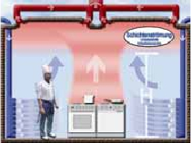
Abbildung 27:
– Schichtenströmung mit Erfassung über Küchenlüftungsdecke
– Bodennahe Zulufteinbringung
– Nahezu unbelasteter Arbeitsbereich (Höhe H)
Auf Grund der besonderen Hygieneanforderungen in Küchen müssen bodennah positionierte Luftdurchlässe besonderen Hygieneansprüchen genügen (siehe DIN 18 869-3 "Großküchengeräte; Einrichtungen zur Be- und Entlüftung von gewerbsmäßigen Küchen; Teil 3: Luftdurchlässe").
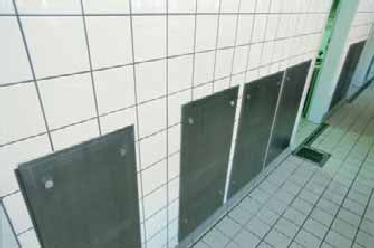
Abbildung 28: Bodennah positionierte Flächenluftdurchlässe aus Edelstahl, beginnend 0,2 m über Fußboden (Spritz- bzw. Reinigungsrand)
| VDI 2052 | Raumlufttechnische Anlagen für Küchen |
| VDI 2052 Blatt 1 | Raumlufttechnische Anlagen für Küchen Bestimmung der Rückhalteeffizienz von Aerosolabscheidern in Abluftanlagen für Küchen |
| DIN 18869 | Großküchengeräte; Einrichtungen zur Be- und Entlüftung von gewerbsmäßigen Küchen; Teil 1: Küchenlüftungshauben, Teil 2: Küchenlüftungsdecken, Teil 3: Luftdurchlässe, Teil 4: Luftleitungen. |
| ASI 8.19/04 | Arbeitssicherheits-Information "Be- und Entlüftung von gewerblichen Küchen" (Berufsgenossenschaft Nahrungsmittel und Gaststätten) |
Bei der Gewinnung von Rohblöcken in Steinbrüchen und bei der weiteren Bearbeitung werden handgeführte Druckluft- und Elektrowerkzeuge eingesetzt. Die Arbeiten werden im Freien, in Steinhauerhütten und Werkhallen ausgeführt. Bei der Bearbeitung entstehen Feinstäube, welche über die Atemwege die Lunge erreichen.
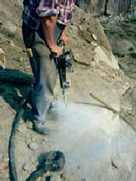
Abbildung 29: Erhebliche Staubbelastung bei Arbeiten ohne Absaugung
Eine besondere Gefahr stellt der alveolengängige Quarzstaub dar, welcher zu Silikose und Siliko-Tuberkulose führen kann. In Einzelfällen kann daraus Krebs entstehen. Der Grenzwert kann in der Trockenbearbeitung nur mit gut gewarteten Entstaubungsanlagen eingehalten werden. Ohne Entstaubung werden Grenzwerte um ein Vielfaches überschritten.
Der freigesetzte Staub ist möglichst vollständig an der Entstehungsstelle zu erfassen. Er wird über flexible Schläuche und Rohrleitungen der Filteranlage zugeführt.
Eine wirksame Stauberfassung ist nur möglich, wenn der Staub an der Entstehungsstelle, d. h. am Meißel, Winkelschleifer oder Bohrer erfasst wird. In Sonderfällen gelingt das gut mit Absaugung durch einen Hohlbohrer.
Zur Stauberfassung werden eingesetzt:
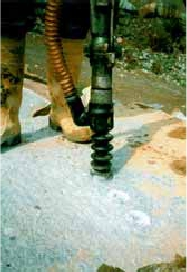
Abbildung 30: Staubabsaugung direkt am Druckluftwerkzeug
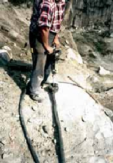
Abbildung 31: Absaugtopf mit Gummibalg um den Bohrmeißel
| – | unterschritten 65 % der Messwerte den Grenzwert für aveolengängigen Quarzfeinstaub (0,15 mg/m³), |
| – | unterschritten 90 % der Messwerte den allgemeinen Staubgrenzwert für aveolengängigen Staub (6 mg/m³), |
| – | unterschritten mehr als 80 % der Messwerte den allgemeinen Staubgrenzwert für einatembaren Staub (10 mg/m³). |
Insbesondere im Baubereich werden regelmäßig handgeführte Maschinen und Geräte verwendet, um mineralische Werkstoffe/Baustoffe zu bearbeiten, z. B.
Bei Verwendung der Geräte ohne wirksame Absaugung werden erfahrungsgemäß extrem hohe Staubkonzentrationen erzeugt und die geltenden Grenzwerte um mehr als das 50fache und mehr überschritten.
Zur Reduzierung der Staubemission müssen die Maschinen/Geräte gemäß Anhang III Nr. 2 der Gefahrstoffverordnung wirksam abgesaugt werden. Die Wirksamkeit der Absaugung ist vor der ersten Inbetriebnahme nachzuweisen.
Da am Markt verschiedene Maschinen und Geräte mit Stauberfassungseinrichtungen angeboten werden, jedoch dazu eine systematische staubtechnische Bewertung fehlt, wurde ein Forschungsprojekt "Untersuchungen zum Staubemissionsverhalten" durchgeführt. Die Untersuchung der Maschinen/Geräte erfolgte unter Praxisbedingungen in einem speziellen Prüfraum nach genau definierten Prüfbedingungen.
Untersucht wurden ausschließlich von Herstellern angebotene Gerätesysteme, die mit einer Stauberfassungseinrichtung am Arbeitsgerät ausgerüstet sind und mit einem Entstauber betrieben werden (Arbeitsgeräte mit Entstauber). Als Entstauber wurden Geräte der Staubklasse M oder höherwertig eingesetzt.
Bei den staubtechnischen Untersuchungen hat sich gezeigt, dass die Wirksamkeit der Stauberfassung maßgeblich vom Erfassungselement und dem angeschlossenen Entstauber beeinflusst wird. Daneben ist die Menge des erzeugten Staubes von Bedeutung.
Erfassungselement: Je dichter die Bearbeitungsstelle vom Erfassungselement umschlossen wird, umso geringer ist die Staubemission.
Mobilentstauber: Nicht alle Mobilentstauber einer Staubklasse sind für die Erfassung von mineralischen Stäuben geeignet. So haben sich insbesondere zweistufige Mobilentstauber mit Papierfiltertüten als nachteilig erwiesen, da durch den Feinstaubanteil im erfassten Staub schon nach kurzer Zeit die Oberfläche der Filtertüte sehr dicht belegt und dadurch die Saugleistung des Entstaubers extrem reduziert wird. Zur Aufrechterhaltung der Saugleistung muss bei hohem Staubanfall alle 10 bis 20 Minuten die Filtertüte gewechselt werden, was für die Praxis nicht geeignet ist.
Sehr staubintensive Bearbeitungsgeräte sind erfahrungsgemäß Trennschleifer und Mauernutfräsmaschinen. Trotz des hohen Staubanfalls konnte bei einigen Geräten mit guter Kapselung und geeignetem Entstauber die Einhaltung der Grenzwerte nachgewiesen werden, während bei anderen sowohl hinsichtlich der einatembaren (E-Staub) und alveolengängigen Fraktion (A-Staub) als auch des bis Ende 2004 geltenden Grenzwertes für Quarzfeinstaub um mehr als 10fache Überschreitungen festgestellt worden sind.
Die Untersuchungen und Auswertungen sind noch nicht abgeschlossen. Eine systematische Zusammenstellung der Ergebnisse und Umsetzung in einer für den Anwender verständlichen Form wird als Hilfestellung zur Auswahl staubarmer Bearbeitungsgeräte angeboten werden.
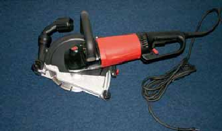
Abbildung 32: Diamant-Winkeltrennschleifer mit weitestgehend geschlossenem Stauberfassungselement
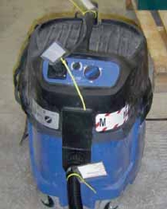
Abbildung 33: Mobilentstauber
Bei Errichtung oder Umgestaltung von Gebäuden sind oft Bohrungen, z. B. für Lüfter, Rauchgasanschlüsse, Durchbrüche oder elektrische Schaltgeräte, erforderlich.
Das zu bohrende Material ist häufig Kalksandstein und verursacht erhebliche Staubmengen.
Bei Kernbohrungen mit Ø 74 mm und Ø 112 mm ergab sich, dass die Grenzwerte für die aveolengängige – wie auch die einatembare Staubfraktion (A- und E-Fraktion) – um mehr als das 10fache überschritten wurden.
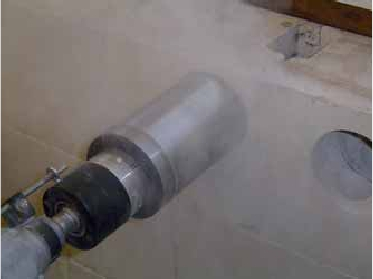
Abbildung 34: Kernbohrung ohne Absaugung
Die freigesetzten Stäube müssen direkt erfasst und abgeschieden werden.
Ein neben dem Bohrgerät vorhandenes Absauggerät mit einer geeigneten Erfassungseinrichtung muss ständig nachgeführt und wiederholt positioniert werden, um eine wirksame Erfassung zu gewährleisten. Erfahrungsgemäß stört dies den Arbeitsfortgang und unterbleibt häufig.
Auf Grund der wechselnden Bohrstellen sollte deshalb ein zwangsläufig wirkendes Verfahren eingesetzt werden.
Zum Einsatz kommen Bohrwerkzeuge mit integrierter Absaugung. Unter Einsatz eines Mobilentstaubers mit einem Volumenstrom von ca. 220 m³/h ergeben sich personenbezogene Messwerte, die den Grenzwert für die alveolengängige und die einatembare Fraktion deutlich unterschreiten.
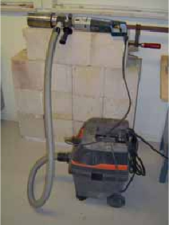
Abbildung 35: Bohreinheit mit Mobilentstauber
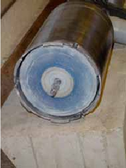
Abbildung 36: Bohrkrone mit Zentralbohrer
Die Bohrmaschine wird direkt an den Mobilentstauber angeschlossen. Bei Einschalten der Bohrmaschine wird der Entstauber automatisch mit eingeschaltet und hat eine Nachlaufzeit zur Bohrmaschine von ca. 15 s. Der Mobilentstauber hat eine automatische Rüttelabreinigung.
Messwerte
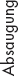 |
A-Fraktion | E-Fraktion | ||
| |
Arbeitsplatzgrenzwert (AGW) | 3 mg/m³ | 10 mg/m³ | |
| ohne | personenbezogen | 34,9 mg/m³ | 121 mg/m³ | |
| ortsbezogen | 27,3 mg/m³ | 77,7 mg/m³ | ||
| mit | personenbezogen | 0,97 mg/m³ | 3,59 mg/m³ | |
| ortsbezogen | 0,8 mg/m³ | 2,18 mg/m³ |
In einer Fertigungshalle werden glasfaserverstärkte Kunststoffe (GFK) und Glasfaserverstärkte Polyestermaterialien (GFP) überwiegend durch Handauflegeverfahren in Vakuumformen zu Sandwichteilen verarbeitet. Die Abmessungen der Vakuumformen betragen im Mittel 1350 mm x 2100 mm. Die Beschäftigten legen die Folien bzw. Matten in die Vakuumform. Nach dem Formvorgang werden die Oberflächen der Formen dreimal mit Polyesterharz gestrichen. Die fertigen Teile werden unter anderem als Dach-, Wand- und Türelemente für Trafostationen, Verkleidung von Alugerüsten und in der Wasserversorgung eingesetzt.
In der Produktionsphase entstehen drei Emissionsvorgänge:
In der Fertigungshalle ist zur Reduzierung der Styrol-Konzentrationen eine RLT-Anlage betrieben.
Technische Daten:
| Hallenmaße: | L = 60 m; B = 25 m; A = 1500 m²; H = 5 m; V = 7500 m³ |
Anzahl Vakuumformen: 28
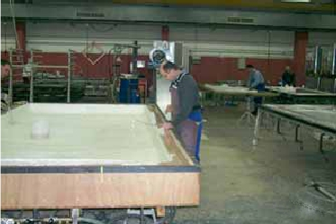
Abbildung 37: Verarbeitung der GFK- und GFP-Materialien ohne Absaugung mit raumlufttechnischer Anlage (RLT-Anlage)
Durch die RLT-Anlage in Abbildung 37 ohne Absaugung und Erfassung an den Entstehungsstellen werden die Styrol-Emissionen nicht ausreichend beseitigt, außerdem entstehen in der Halle z. T. unkontrollierte Luftströmungen. Die Folge daraus ist, dass der Arbeitsplatzgrenzwert (AGW) für Styrol von 86 mg/m³ im Arbeitsbereich überschritten wird.
Dies führt dazu, dass die Beschäftigten persönliche Schutzausrüstungen tragen müssen.
Zur Reduzierung der Styrol-Konzentrationen wurde folgende lufttechnische Schutzmaßnahme durchgeführt:
Absaugung der Styrol-Emissionen durch eine zentrale Absauganlage mit Fortluft nach außen. Die Styrol-Dämpfe werden durch zwei verfahrbare Hauben oberhalb der Vakuumformen erfasst. Für jeden Tisch wurde ein Absauganschluss installiert, an dem die Hauben angeschlossen werden.
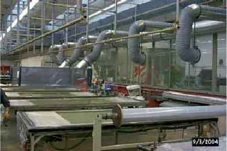
Abbildung 38: Verarbeitung der GFK- und GFP-Materialien mit Absaugung und raumlufttechnischer Anlage (RLT-Anlage)
Technische Daten der Absauganlage:
| Absaugung: | V = 7000 m³/h, | |
| Absaugung pro | ||
| Vakuumform: | V = 1700 m³/h, | |
| Filtermaterial: | Braunkohle, 100 kg |
Mit der Absauganlage und der Erfassung des Styrols durch die Hauben oberhalb der Vakuumformen wurden die Styrolkonzentrationen auf ein Drittel reduziert. Die Messergebnisse zeigen, dass der AGW eingehalten wird.
Um diese Betriebssituation dauerhaft sicherzustellen, ist eine gewissenhafte Wartung der lufttechnischen Einrichtungen eine grundlegende Voraussetzung. Hierzu wird unter anderem das Filtermaterial im Abscheider roh- und reinluftseitig mit einem Photoionisationdetektor (PID) überwacht. Der PID wird regelmäßig kalibriert.
Es werden z. B. in der Baustoffindustrie oder in Bergwerken Mischanlagen betrieben, in denen staubförmig angelieferte Stoffe untereinander vermischt oder mit Wasser zu einem pumpfähigen Gemisch angerührt werden. Dabei wird das Schüttgut üblicherweise aus einem Silo in die unterhalb des Silos befindliche Mischanlage ausgetragen und dort gemischt.
Beim Eintrag des Schüttgutes vom Silo in die Mischanlage wird staubhaltige Verdrängungsluft freigesetzt. Zur Abführung dieser Verdrängungsluft wird häufig am Abluftstutzen des Mischers ein einfacher Filterbeutel, z. B. aus Baumwolle befestigt, der als "Entlüftungsfilter" dienen soll (siehe Abbildung 39). Diese verbreitete Technik hat im Betrieb weit reichende Nachteile.
Probleme:
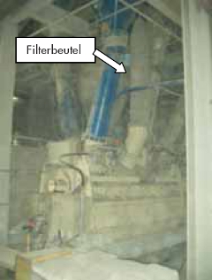
Abbildung 39: Anlage mit Filterbeutel
Messergebnisse
In so entlüfteten Mischanlagen für Baustoffe wurden personenbezogene Konzentrationen von einatembaren Staub (E-Staub) bis zu 40 mg/m³ (Arbeitsplatzgrenzwert (AGW) = 10 mg/m³) gemessen. Ferner wurden Überschreitungen der bis Ende 2004 geltenden Luftgrenzwerte für einzelne Gefahrstoffe (Quarzfeinstaub, Schwermetalle) festgestellt.
Ein geeignetes Entstaubungssystem für Mischanlagen sollte die im Mischbehälter anfallende Verdrängungsluft durch direkte Absaugung am Mischbehälter erfassen. Ein geringfügiger Unterdruck im Mischer kann Undichtigkeiten ausgleichen. Durch richtige Wahl des Filtermediums, des Abreinigungssystems und richtige Dimensionierung sollte das Filter auch bei nasser Luft in Verbindung mit hygroskopischen Stäuben abreinigbar bleiben. Die gereinigte Luft sollte ins Freie abgeführt werden.
Es wurde eine aktive Trockenentstaubung durch Aufbau eines filternden Abscheiders mit Ventilator an Stelle des Filterbeutels eingesetzt. Im Mischbehälter wird ein geringfügiger Unterdruck erzeugt, die staubhaltige Verdrängungsluft strömt in das Filtergehäuse, der Staub wird an den Filterelementen abgeschieden und die Reinluft über Dach ins Freie geführt. Die Filterelemente mit PTFE-Membrane werden durch ventilgesteuerte Druckluftimpulse vollautomatisch abgereinigt. Das Filter ist Platz sparend in den Stahlbau oberhalb der Mischanlage integriert und der Austrag des abgeschiedenen Staubes erfolgt direkt zurück in den Mischer. Um bei Nassmischern ein Anbacken des Staubes zu vermeiden, wird trockene Raumluft mit angesaugt oder gegebenenfalls eine Isolierung oder Beheizung des Filtergehäuses vorgesehen.
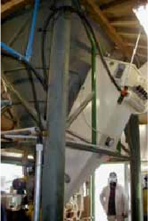
Abbildung 40: Filternder Abscheider mit Ventilator an Stelle des Filterbeutels
Technische Daten (Beispiel)
Volumenstrom: 600 m³/h
Filter: Taschen-Jetfilter
Filterfläche: 6 m²
Filtermedium: Polyester-Nadelfilz mit PTFE-Membrane
Abreinigung: Druckluft 5 bar
Vorteile
erhebliche Expositionsminderung;
wartungsfreier und vollautomatischer Betrieb;
kürzere Reinigungszeit;
weniger Verschleiß;
Kontrollmessungen nach TRGS 402 können entfallen.
Messergebnis: Die E-Staubkonzentration im Arbeitsbereich verminderte sich auf 0,2 mg/m³.
Problemstellung
In die geschlossenen Verladehallen fahren LKW ein und werden dort durch Gabelstapler mit Traglasten von 8 t be- und entladen. Trotz Rußfiltern an allen Staplern und lufttechnischer Maßnahmen (Mischlüftung mit Zu- und Abluft an der Hallendecke) konnte der bis Ende 2004 geltende Grenzwert für Dieselmotoremissionen nicht mehr eingehalten werden.
Messungen zeigten, dass die vorhandene lufttechnische Anlage die Abgase gleichmäßig mischt und mit einer Raumluftwechselzahl von 2,6/h nur unwesentlich verdünnt.
Technische Daten
Hallengröße: (L, B, H) 320 m, 30 m, 12 m; 25 Diesel-Gabelstapler, 8 t Tragfähigkeit, Dieselverbrauch: 500 t/a, Rußfilter an allen Staplern; Abfertigung von durchschnittlich 70 LKW pro Schicht, maximal bis zu 260 LKW pro Tag in der geschlossenen Halle.
Die Abgase der Verbrennungsmotoren sind heiß und steigen somit nach oben zur Hallendecke. Im Fall der Gabelstapler werden die Abgase sogar über Dach der Fahrzeuge nach oben abgeleitet. Damit bietet sich für die Lüftung das Konzept der Schichtenströmung an (siehe auch Abschnitt 4, Abbildung 8).
Im Unterschied zu stationären Emissionsquellen, in denen die Überlegenheit der Schichtenströmung bereits vielfach nachgewiesen wurde, liegen in diesem Fall folgende erschwerende Umstände vor:
Die Schadstoffemittenten sind mobil. Dies führt zu Verwirbelungen der Luft durch die Fahrbewegungen. Hinzu kommt die Einschränkung, dass Frischluft in Bodennähe nur von den Seitenwänden aus relativ großer Entfernung zugeführt werden kann. Die Luftdurchlässe benötigen also einerseits eine große Wurfweite, dürfen andererseits aber nicht zu unerwünschten Verwirbelungen der Luft oder zu Induktionseffekten führen.
Beschreibung
In den 180 m langen ersten Teil der Verladehalle wurde eine Lüftung nach dem Schichtenströmungsprinzip eingebaut. Deren entscheidender Bestandteil sind 40 im Bodenbereich an den Hallenseiten eingesetzte Zuluftdurchlässe, welche die 30 m breite Halle impulsarm mit Zuluft versorgen (175.000 m³/h; flächenbezogener Zuluftstrom 32 m³/[m² h*]). Die Zuluftdurchlässe sind speziell für diese Anwendung optimiert. Sie haben die widersprüchlichen Anforderungen von ausreichender Wirkungstiefe bei gleichzeitig geringer Induktion zu erfüllen. Eine zu hohe Induktionswirkung würde zu einer unerwünschten Rückvermischung der Zuluft mit verunreinigter Raumluft führen.
Die Abluft (280.000 m³/h) wird an der Decke abgezogen. Die Luftdifferenz wird über die Blocklager ausgeglichen. Im Heizfall findet eine Energierückgewinnung über Rotationswärmetauscher statt. Die bedarfsgerechte Steuerung der frequenzgeregelten Antriebe der Ventilatoren wird mit Hilfe eines Sichttrübungsmessgerätes vorgenommen. Die Anpassung der Leistung der Lüftung an den augenblicklichen Bedarf dient der Energieeinsparung. Die Steuerung ist in das Leitsystem eingebunden.
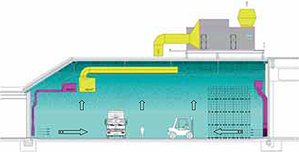
Abbildung 41: Skizze der Luftführung (Querschnitt durch die Halle)
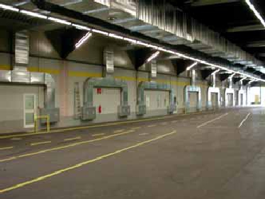
Abbildung 42: Bodennah angeordnete Zuluftdurchlässe neben den Verladezonen (in der obigen Skizze links angeordnet)
Messergebnisse
Die Wirkung der neuen Lüftung ist mittlerweile mit mehreren Messungen der Dieselmotoremissionen an verschiedenen Orten in der Halle im Frühsommer untersucht worden. Die Konzentrationen betrugen sowohl in den Staplerkabinen wie auch an einem ortsfesten Messpunkt nur ¼ der Werte, die zuvor unter ansonsten gleichen Bedingungen mit der alten Lüftung gemessen worden waren.
Eine zweite Messung ist im Winter unter geringfügig anderen Betriebsbedingungen durchgeführt worden. Dabei ergaben sich etwas höhere Konzentrationen als im Sommer, aber noch immer weitaus geringere als mit der bisher verwendeten Mischlüftung.
Die Messwerte erlauben einen Ausstieg aus den regelmäßigen Kontrollmessungen.
Die Verwirbelungen durch die Fahrzeuge beschränken sich auf den Bodenbereich und stören die Wirkung der Schichtenströmung nur gering.
Der Energieverbrauch ist mit der neuen Lüftung gesunken. Die Beschäftigten sind hochzufrieden.
Die Filter können sich prozessbedingt schnell zusetzen. In dem geschilderten Beispiel ergibt sich ein Wartungsaufwand von 3 bis 4 Filterwechsel/Jahr im Bereich des Wärmerades (Wärmerückgewinnung im Winter).
Zur Farb- bzw. Lacktrocknung im Bogenoffsetdruck können entweder physikalische Verfahren (Heißluft und/oder IR-Strahlung) zum Austreiben der Lösemittel oder chemische Verfahren (UV-Licht) zur Polymerisation eingesetzt werden. Bei den lösemittelfreien UV-Farb- bzw. UV-Lacksystemen ist bei der Trocknung mit UV-Licht die Bildung von Ozon durch die energiereiche UV-Strahlung im Wellenlängenbereich kleiner 230 nm nicht auszuschließen. Des Weiteren muss mit möglichen Spaltprodukten aus den verwendeten Farben und Bedruckstoffen, z. B. Papier, gerechnet werden.
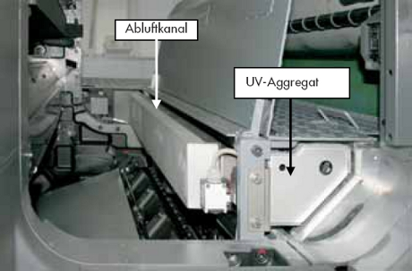
Abbildung 43: Druckmaschinenbauraum (Ausschnitt) im Bogenoffset
Eine weitere typische Gegebenheit des Offsetdrucks resultiert aus der Notwendigkeit des Waschens der Gummitücher, den eigentlichen Überträgern des Druckbildes auf den Bedruckstoff. Hierzu werden Lösemittel eingesetzt, die in Verbindung mit der heißen Oberfläche der UV-Lampen (800 bis 900 °C) eine Explosionsgefahr erzeugen können.
Ozon ist ein Reizgas, das schon in niedrigen Konzentrationen auf Augen, Nase, Rachenraum und Lunge einwirkt. Auf Grund der hohen Maschinenlaufgeschwindigkeiten (bis zu 14.000 Bogen pro Stunde) und der damit verbundenen Luftströmung kann das gebildete Ozon über die gesamte Maschinenlänge ungehindert in den Drucksaal austreten.
Spaltprodukte aus den Bedruckstoffen und den Fotoinitiatoren riechen zum Teil sehr intensiv. Diese Geruchsstoffe können über den Bogenlauf bis hin zur Bogenentnahme transportiert werden, dem eigentlichen Arbeitsplatz des Druckers, wo sie dann, in Abhängigkeit von der Menge, eine hohe Belästigung verursachen. Empfehlenswert wäre deshalb eine gute Be- und Entlüftung des gesamten Drucksaals. Weiterhin sollten die Druckerzeugnisse bei Geruchsbelästigung möglichst umgehend aus dem Drucksaal transportiert oder abgesaugt werden, da die Geruchsstoffe noch dem Papier anhaften.
Hinsichtlich der Atemluftbelastung im Drucksaal sind die Emissionen aus den zur Anwendung kommenden Waschmitteln weniger kritisch. Auf Grund der relativ hohen Flammpunkte (Fp > 55 °C) verdampfen diese nur sehr langsam und in geringer Menge.
Um die Exposition gegenüber Ozon zu begrenzen, werden UV-Aggregate heute üblicherweise mit stationären Luftabsaugungen ausgestattet, die das Ozon nach außen abführen und so aus dem Drucksaal entfernen. Dadurch wird gewährleistet, dass die neben der UV-Strahlung erzeugte Wärme und das gebildete Ozon nicht in den Arbeitsraum gelangen können. Dabei ist darauf zu achten, dass die Maschinenverkleidung vollständig angebracht ist, denn nur so sind eine wirksame Schadstofferfassung und damit eine ausreichende Absaugung gewährleistet.
Die effiziente Ozonabsaugung am Ort der Entstehung garantiert, dass der AGW-Wert nicht überschritten wird.
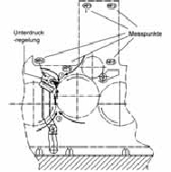
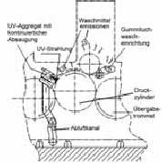
Abbildung 44: Absaugung diffuser Emissionen aus dem Druckmaschinenbauraum
Die kontinuierliche Luftzufuhr und die damit einhergehende Luftverwirbelung durch den Papiertransport in der Druckmaschine sorgen in aller Regel dafür, dass eine Diffusion von Lösemittelemissionen in gefahrbringender Konzentration zum UV-Trockner nicht stattfindet. Die Absaugung der UV-Trockner und der damit verbundene zusätzliche permanente Luftaustausch tun ein Übriges, um eine Gefährdung (Explosionsgefahr) durch den Eintrag von Lösemittel in den Trocknerbereich zu verhindern. Eventuell auftretende Spaltprodukte aus den Farben und dem Bedruckstoff können, falls erforderlich, durch eine zusätzliche optional erhältliche Geruchsabsaugung im Bereich der Bogenentnahme entfernt werden (siehe Abbildung 45).
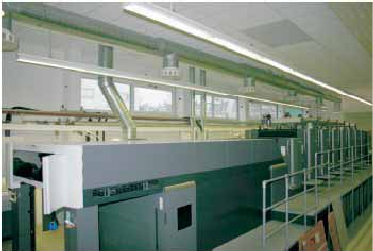
Abbildung 45: Bogenoffsetmaschine im Drucksaal: Alle abgesaugten Emissionsbestandteile werden mittels Abluftleitungen über Dach abgeführt, wodurch ein Eintrag in den Arbeitsbereich ausgeschlossen wird.
Zusätzlich müssen nachfolgend beschriebene Maßnahmen beim Waschvorgang des Gummituchs ergriffen werden:
Fortschrittliche UV-Trocknersysteme können auf Grund des Sicherheitskonzepts von Trockner- und Druckmaschinenhersteller eine erhebliche Verkürzung dieser Waschzeiten im UV-Bogenoffsetdruck realisieren. Dabei kann die maximal theoretische Lösemittel- Konzentration im Trockner rechnerisch ermittelt werden. Unter der Annahme, dass sämtliches eingebrachtes Waschmittel in den Trocknerbereich gelangt, lässt sich mit der abgesaugten Luftmenge, der Waschmittelmenge und Molmasse sowie der Betrachtung als ideales Gas die maximale Konzentration ermitteln. Ist die Luftmenge ausreichend groß, so werden je nach Typ des Waschmittels (Flammpunkt > 55 °C) maximale Konzentrationen von weniger 1 % der UEG erreicht.
Auf Grund der Vielfalt an unterschiedlichen Druckmaschinen/-konstruktionen und UV-Trocknersystemen muss im Einzelfall geprüft werden, welche der folgenden Kriterien dabei zum Tragen kommen:
Die vorstehend aufgeführten Kriterien stellen eine mögliche Lösung für diese Systeme dar; es handelt sich hierbei jedoch nicht um verbindliche Anforderungen.
Verfahrenstechnisch bedingt kommt es in Siebdruckereien zur Emission von Lösemitteldämpfen, was vor allem auf das Verdunsten der in den Druckfarben, Reinigungs- und Hilfsmitteln enthaltenen Lösemittel zurückzuführen ist. Emissionen treten vor allem beim Druckvorgang, beim Trocknen des Farbauftrages und bei der Siebreinigung auf. Diese unvermeidbaren Stofffreisetzungen können zur Beeinträchtigung der Gesundheit der Beschäftigten führen.
Im Rahmen umfangreicher Messungen in insgesamt 40 Siebdruckereien wurde bei 17 % der Messwerte eine Überschreitung der Grenzwerte festgestellt [LASI/ALMA-Empfehlung LV 24.] (LASI = Länderausschuss für Arbeitsschutz und Sicherheitstechnik). Die Grenzwertüberschreitungen waren insbesondere auf die 2003 erfolgte Senkung der damaligen MAK-Werte zweier oft eingesetzter Lösemittel (Solvent Naphtha von 200 auf 100 mg/m³, Diacetonalkohol von 240 auf 96 mg/m³!) zurückzuführen.
Zur Vermeidung und Verminderung dieser Belastungen durch Lösemitteldämpfe sind deshalb nach dem Schutzstufenkonzept der Gefahrstoffverordnung unter anderem nach § 9 Abs. 2 Nr. 2 lufttechnische Maßnahmen einsetzbar (Schutzstufe 2), was gegenwärtig in der Praxis nur unzureichend der Fall ist. In kleinen Siebdruckereien dominiert die freie Lüftung. Werden lufttechnische Maßnahmen angewendet, beschränken sich diese meistens auf die Absaugung der Lösemitteldämpfe aus den Durchlauftrocknern, aus dem Drucksaal und aus dem Siebwaschbereich. Raumlufttechnische Anlagen mit gezielter Zu- und Abluftführung sowie Wärmerückgewinnung sind kaum anzutreffen.
Als Beispiel dienen die Trockenhorden in einer Siebdruckerei, die Druckerzeugnisse, z. B. Plakate, nach dem Flachsiebdruckverfahren herstellt. Es soll eine wirkungsvolle Maßnahme zur Reduzierung der Lösemittelbelastung im Arbeitsbereich während des Bestückens einer Siebdruckmaschine (Dreiviertelautomat) und dem sich anschließenden Trockenvorgang dargestellt werden.
Ausbreitung der Lösemitteldämpfe
Trockenhorden stellen eine Quelle für die Emission von Lösemitteldämpfen dar. Während des Trocknungsprozesses treten Lösemitteldämpfe ungehindert in den Drucksaal bzw. in die Arbeitsbereiche der Beschäftigten aus. Da die Trockenhorden während des Druckvorganges von den Beschäftigten kontinuierlich bestückt werden, kommt während dieser Zeit eine Aufstellung außerhalb des Arbeitsbereiches oder sogar des Drucksaales nicht in Frage.
Einfluss von Querströmungen
Das Ausbreitungsverhalten der Lösemitteldämpfe an den Trockenhorden wird von Querströmungen im Drucksaal stark beeinflusst. Diese können beispielsweise durch vorhandene Lufttechnik sowie durch Bewegungen von Maschinen und Beschäftigten hervorgerufen werden.
Trocknungsverhalten der Lösemittel
Die beim Druckvorgang verwendeten Farben besitzen je nach Farbtyp unterschiedliche Konsistenz und Lösemittelanteile. Die Lösemittelbestandteile der aufgetragenen Druckfarbe verdunsten je nach Dampfdruck unterschiedlich schnell. Wesentlichen Einfluss auf das Trocknungsverhalten haben auch die Dicke des Farbauftrages und die Größe der bedruckten Fläche.
Für eine wirkungsvolle Absaugung der Lösemitteldämpfe sind großflächige Erfassungselemente besonders geeignet. Dazu gibt es individuelle und auch handelsübliche konfektionierte Lösungen, wie beispielsweise direkt an der Trockenhorde installierte sowie mobile Absaugeinrichtungen.
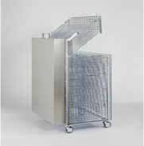
Abbildung 46: Montierte Absaughaube
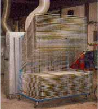
Abbildung 47: Mobile Absaughaube für Trockenhorden
Vorteile des Einsatzes dieser Absaughauben:
Explosionsschutz
Hinsichtlich einzuhaltender Explosionsschutzmaßnahmen wird auf die DIN EN 1010-1 verwiesen. Für Siebdruckmaschinen gelten dabei besondere Bedingungen, die in der LASI/ALMA-Empfehlung LV 24 näher erläutert werden.
Technische Daten (für Abbildung 47)
| • | Trockenhorde: | Höhe 150 cm, Breite 100 cm, Tiefe 100 cm |
| • | Absaugvolumenstrom: | ca. 1200 m³/h |
| • | Druckverlust: | ca. 250 Pa |
| • | Anschlussdurchmesser: | 100 mm |
In einer Reihe von Herstellungsprozessen von technischen Produkten ist die Zugabe von Komponenten zu Mischungen, die gerührt werden, erforderlich. Am dargestellten Arbeitsplatz aus der Lackherstellung erfolgt eine manuelle Zugabe von Pigmenten, die akute und chronische Gesundheitsschäden verursachen können.
Höherrangige Maßnahmen wie Ersatz des Gefahrstoffes durch einen weniger gefährlichen Stoff oder Arbeiten in geschlossenen Systemen sind bei einer Vielzahl von Arbeitsplätzen aus unterschiedlichen Gründen nicht umsetzbar.
Daher besteht eine Exposition des Bedieners gegenüber
die zu minimieren ist.
Die ungeschützte Rührwelle stellt eine weitere Gefährdung dar.
Ein Gesamtansatz von ca. 400 kg wird über einen Zeitraum von 30 Minuten relativ offen gemischt (Abbildung 48), dabei werden ca. 100 kg Gelbpigment (Bleisulfochromatgelb) als Sackware manuell zugegeben. Am Rande des Mischbehälters befand sich ein schmaler Absaugtrichter. Eine personenbezogene Messung zeigte eine deutliche Staubbelastung des Beschäftigten (4,1 mg/m³) und eine mehrfache Überschreitung der bis Ende 2004 geltenden Grenzwerte für Blei und Chrom (VI).
Technische Daten:
Raummaße: L = 14 m, B = 4 m, H = 3,1 m
Behälteroberfläche: A = ca. 0,2 m²
Erfassungseinrichtung:
Öffnungsquerschnitt: 0,03 m²
Durchmesser: 0,2 m
Abstand von Rührwelle (Behältermitte): ca. 0,4 m
Absaugung: V = ca. 500 m³/h
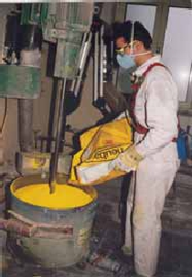
Abbildung 48: Offener Rührwerkbehälter
Anzustreben ist eine möglichst direkte Erfassung der Lösemitteldämpfe, des entstehenden Staubes und Vermeidung der Ausbreitung der Gefahrstoffe im Raum. Dazu muss die Oberfläche, von der Lösemittel abdampft, minimiert werden und der bei der Zugabe entstehende Staub mit einer Erfassungseinrichtung halboffener oder möglichst geschlossener Bauart an der Emissionsquelle erfasst werden.
Außerdem muss vermieden werden, dass bei der Entsorgung leerer Säcke eine weitere Staubfreisetzung auftritt. Wegen der Toxizität der Stäube muss eine Abscheidung erfolgen, ggf. sind bei einer Luftrückführung die Anforderungen der TRGS 560 zu beachten. Eine dauerhaft sichere Einhaltung der Luftgrenzwerte ist anzustreben.
Der Behälter wurde mit einer höhenverstellbaren, geteilten Abdeckung versehen, an der sich die mit einem Gitter versehene Zugabeöffnung befindet. Die Erfassungseinrichtung ist über einen Anschlussstutzen am Deckel angebracht und erfasst sowohl Emissionen aus dem Behälter als auch aus der Öffnung der Zugabestelle (Abbildung 49). Damit wurde eine Erfassungseinrichtung halboffener Bauart realisiert. Die Rührwelle wurde über eine Spiralschlauchkonstruktion abgesichert. In den Fällen, bei denen keine Staubbelastung und keine elektrostatischen Probleme entgegenstehen, könnte die Behälterabsaugung auch über diese Konstruktion erfolgen.
Eine Überprüfung der Wirksamkeit der Umbaumaßnahme ergab, dass damit die bis Ende 2004 geltenden Grenzwerte für Blei und Chrom (VI) unterschritten wurden. Die Kurzzeitwertbedingungen und der Allgemeine Staubgrenzwert für die einatembare Fraktion wurden eingehalten.
Unter Berücksichtigung der verkürzten Exposition (ein Ansatz von 15 Minuten pro Schicht) kann bei dieser Arbeitsweise eine dauerhaft sichere Einhaltung der Luftgrenzwerte erreicht werden.
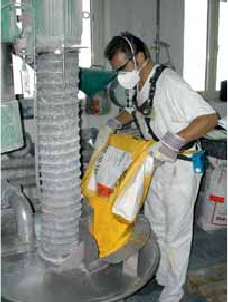
Abbildung 49: Manuelle Sackaufgabe mit verbesserter Erfassungseinrichtung und geschützter Rührwelle
Technische Daten:
Keine Änderung an der Lüftungsanlage, stattdessen bessere Erfassung, keine Luftrückführung,
Filtermaterial:
Polyethylen mit PTFE-Membran.
Diese Lösung ist noch anfällig gegen Querströmungen, da es sich um eine Erfassungseinrichtung halboffener Bauart handelt. Es werden kommerzielle Sackaufgabe-Einrichtungen angeboten, die in geschlossener Bauart ausgeführt sind (siehe Abbildung 50).
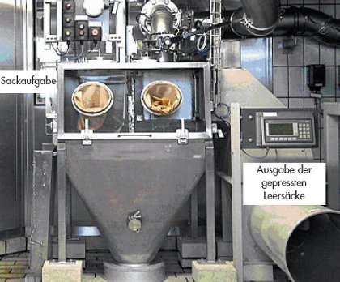
Abbildung 50: Geschlossene Sackaufgabe-Einrichtung mit Leersackkompaktor
BGI 5029 CD-ROM "Schutzmaßnahmen beim manuellen Abwiegen und Abfüllen von staubenden Produkten", herausgegeben vom Berufsgenossenschaftlichen Institut für Arbeitsschutz (BGIA), August 2006.
Im Laborbereich wird typischerweise mit Gefahrstoffen in Mengen umgegangen, die um Größenordnungen kleiner sind als bei einer technischen Produktion oder Fertigung. Hinzu kommt, dass häufig eine Flexibilität gefordert ist, die den Umgang mit Gefahrstoffen in konstruktiv geschlossenen ("technisch dichten") Systemen unwirtschaftlich macht.
Die Gefährdungsbeurteilung ergibt, inwieweit bei den eingesetzten Apparaturen und Verfahren (siehe Abbildung 51) Maßnahmen zum Schutz der Beschäftigten, z. B. lüftungstechnischer Art, erforderlich sind.
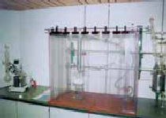
Abbildung 51: Destillation
Als Beispiel für einen labortypischen Umgang mit Lösemitteln wird die Destillation von Essigsäureethylester gewählt. Ein Ansatz in einem 2-Liter-Kolben wird destilliert, indem der Dampf in einem absteigenden Westkühler kondensiert und in einer Vorlage aufgefangen wird. Bei dieser scheinbar geschlossenen Anordnung zeigt eine fünfminütige Messung, dass in Atemhöhe vor der Apparatur ein Wert von 10,6 mg/m³ erreicht wird.
Falls es um den Schutz vor gefährlichen Gasen, Dämpfen, Aerosolen oder Stäuben geht, werden – speziell im Labor – mit Erfolg Abzüge eingesetzt. Dabei sollen drei wesentliche Gefährdungen vermieden werden:
Geeignete Abzüge sind in der Regel solche Produkte, die den Anforderungen der DIN EN 14 175 (08.2003) und dem Kriterienpapier des Fachausschusses Chemie, bzw. der DIN 12 924 Teile 2 bis 4 (11.2005; 04.1993; 01.1994) genügen, insbesondere bezüglich der Bauweise und der Typprüfung der Sicherheitsfunktionen. Um Gefährdungen durch Gefahrstoffaustritte sowie durch mechanische Einwirkungen (Verpuffungen, Explosionen) auf die Umgebung (den Laborraum und die Personen) möglichst zu minimieren, werden Bauformen eingesetzt, die im Betriebszustand meistens, bis auf die Luftzutrittsöffnung, weitestgehend geschlossen sind.
Die vorstehend beschriebene Destillation wird mit gleichem Aufbau in einem Laborabzug durchgeführt (Abbildung 52), die Messung zeigt, dass hierbei die Lösemittelkonzentration im Atembereich unter der analytischen Bestimmungsgrenze liegt, also bei dieser Arbeitsweise eine dauerhaft sichere Einhaltung der Luftgrenzwerte erreicht werden kann.
Dabei muss beachtet werden, dass das Arbeiten im Abzug nicht als automatisch wirksame Methode angesehen werden kann, um sich beim Umgang mit gefährlichen Stoffen zu schützen.
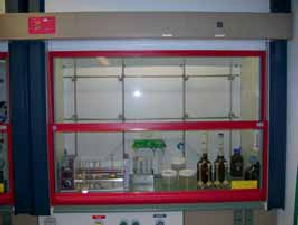
Abbildung 52: Laborabzug
Wichtig ist die fachkundige Einbindung in die Gebäudeinfrastruktur, insbesondere die Lüftungstechnik. Die richtige Anordnung des Abzugs im Laborraum gehört ebenfalls wesentlich dazu:
Luftströmungen und Bewegungen vor dem Abzug können die Strömungsverhältnisse im Abzug (Abbildung 53) stören und zu einem Schadstoffaustritt durch die Arbeitsöffnung in den Atembereich des Bedieners führen.
Dies kann beispielsweise der Fall sein, wenn sich der Abzug neben der Eingangstür oder am Hauptverkehrsweg des Labors befindet.
Ebenso entscheidend für die Schutzwirkung ist der richtige Einsatz durch den Benutzer, z. B.:
Auch Einbauten im Abzug führen zu Abweichungen von den idealen Strömungsbedingungen und stören die gewünschte Funktion, ebenso wie zu geringe Zuluftströme (falsch dimensionierte oder nicht richtig eingestellte technische Zuluft) oder mangelnde Abluftvolumenkapazität, z. B. bei falscher Dimensionierung bzw. Steuerung des Volumenstroms bei wechselndem Betrieb mehrerer Abzüge an einer Lüftungsanlage.
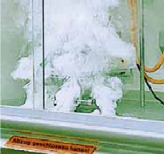
Abbildung 53: Rauchsimulation im Abzug
Technische Regeln für Gefahrstoffe "Laboratorien" (TRGS 526) (07.2001),
Richtlinien für Laboratorien (BGR 120),
BG-Information "Gefährdungsbeurteilung im Labor" (BGI 850-1) in Vorbereitung,
BG-Information "Laborabzüge" (BGI 850-2) in Vorbereitung,
Kriterienpapier des Fachausschusses Chemie, Download von der Homepage der BG Chemie
(www.bgrci.de/fileadmin/BGRCI/Downloads/DL_Praevention/Fachwissen/Laboratorien/Abzuege/Spuergas-Hoechstwerte_Abzuege_Gr.pdf
).
Die Abwärme aus der Abluft von z. B. Hallenluftabsaugungen oder Entstaubungsanlagen wird meist ungenutzt in die Umgebung abgeführt. Mit einer vollständigen oder teilweisen Nutzung der Abwärme kann ein wichtiger Beitrag zur Energieeinsparung und damit Senkung der Betriebskosten geleistet werden. Eine direkte Nutzung über die Umluft oder Reinluftrückführung, z. B. an Entstaubungsanlagen, ist jedoch nur bedingt möglich (siehe Anhang 4 und Abschnitt 3.4.1 der BG-Regel "Arbeitsplatzlüftung – Lufttechnische Maßnahmen" [BGR 121]), wodurch eine Wärmerückgewinnung nur in den wenigsten Fällen erfolgt. Der Einsatz von regenerativen Wärmeübertragern mit rotierenden Speichermassen ist in der Lüftungs- und Klimatechnik üblich und hat sich bewährt. Dabei gelangt die gesamte Abluft in die Atmosphäre und für die Zuluft wird nur Außenluft verwendet. Ihr Einsatz in belasteter Abluft wird aber wegen der Befürchtung der Verschleppung und Rückförderung von Luftverunreinigungen häufig nicht erwogen.
In Abhängigkeit von der Art und Konzentration der Luftverunreinigung sowie der Luftmengen ist eine geeignete Kombination aus Erfassung, Abscheider und Wärmerückgewinnung vorzusehen. Bei Bearbeitungsverfahren mit Staubfreisetzung, z. B. in der Kunststoffindustrie bei mechanischen Bearbeitungsvorgängen, wie Sägen, Schleifen, Trennen und Bohren, sollte ein Kompaktabscheider als Baueinheit von Staubabscheider und Wärmerückgewinnungssystem mit integrierter Reinigungsvorrichtung eingesetzt werden. Damit wird eine optimale Wärmerückgewinnung bei gleichzeitig unbelasteter Zuluft erreicht.
Die praktische Umsetzung kann mit einer Kombination aus Patronenfilter min. F5 (Abreinigung mit Druckluftimpulsen) zur Staubabscheidung und nachgeschalteten Rotationswärmetauscher (Regenerator) erfolgen. Dieser gewährleistet gleichzeitig einen hohen Wirkungsgrad für die Wärmeübertragung. Damit ein Verschleppen von an den Wärmeübertragerflächen anhaftenden Staubpartikeln vermieden wird, wird ein spezielles mit Druckluft arbeitendes Reinigungssystem eingesetzt.
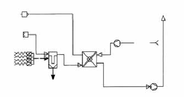
Abbildung 54: Anlagenschaltbild
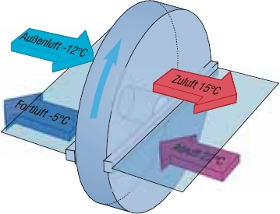
Abbildung 55: Prinzipskizze Rotationswärmetauscher
| Technische Daten der Beispielanlage | ||
| Volumenstrom Fortluft: | 6300 m³/h | |
| Druckverlust Patronenfilter: | 400 Pa (nach 800 Betriebsstunden) | |
| Druckverlust Rotationswärmetauscher: | 180 Pa (nahezu konstant) | |
| Druckverlust Gesamtanlage: | 800 Pa (nach 800 Betriebsstunden) | |
| Rohgaskonzentration: | 300 bis 1000 mg/m³ (Arbeitsplatzabsaugung) | |
| Staubkonzentration Fortluft: | 1 bis 3 mg/m³ | |
Die technischen Daten verdeutlichen den relativ geringen Druckverlust des Rotationswärmetauschers im Vergleich zur Gesamtanlage.
Effektivität der Wärmerückgewinnung
Das Maß der Effektivität der Wärmerückgewinnung ist die Rückwärmezahl. Die Beispielanlage hat bei einem repräsentativen Betriebsablauf einen Temperaturübertragungsgrad von 74 % bezogen auf die Zuluft erreicht. Vergleichbare Wärmeübertragersysteme von Klima- und Lüftungsanlagen arbeiten meist ebenfalls mit Temperaturübertragungsgraden von > 70 %.
Vorteile der Arbeitsplatzabsaugung mit Abwärmenutzung
Beschränkungen
Gefahr der Verschleppung von Gefahrstoffen in die Zuluft.